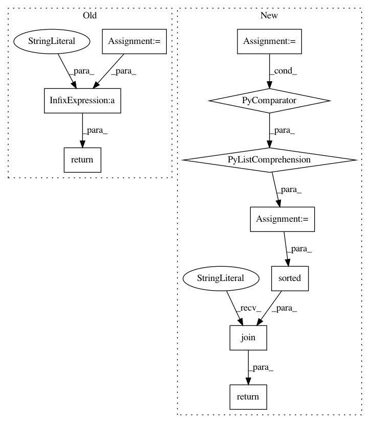

8978e5949e9726fd55948167b5aa6ec2eda0f38a,sos/utils.py,,stable_repr,#Any#,797
Before Change
return "{" + ", ".join(stable_repr(k) + ":" + stable_repr(obj[k])
for k in sorted(obj.keys())) + "}"
elif isinstance(obj, collections.abc.Set):
return "{" + ", ".join(stable_repr(k) for k in sorted(obj)) + "}"
elif isinstance(obj, collections.abc.Sequence):
return "[" + ", ".join(stable_repr(k) for k in obj) + "]"
else:
return repr(obj)
After Change
if isinstance(obj, str):
return repr(obj)
elif isinstance(obj, collections.abc.Mapping):
items = [stable_repr(k) + ":" + stable_repr(obj[k]) for k in obj.keys()]
return "{" + ", ".join(sorted(items)) + "}"
elif isinstance(obj, collections.abc.Set):
items = [stable_repr(x) for x in obj]
return "{" + ", ".join(sorted(items)) + "}"
elif isinstance(obj, collections.abc.Sequence):
In pattern: SUPERPATTERN
Frequency: 3
Non-data size: 10
Instances
Project Name: vatlab/SoS
Commit Name: 8978e5949e9726fd55948167b5aa6ec2eda0f38a
Time: 2017-01-03
Author: ben.bob@gmail.com
File Name: sos/utils.py
Class Name:
Method Name: stable_repr
Project Name: vatlab/SoS
Commit Name: 891ec4af721709367842540bcab909c12a85f3de
Time: 2017-01-03
Author: ben.bob@gmail.com
File Name: sos/utils.py
Class Name:
Method Name: stable_repr
Project Name: regel/loudml
Commit Name: ebb357210205d3ad5fef77e8d33904625fb02a24
Time: 2019-02-10
Author: sebastien.regel@gmail.com
File Name: loudml/loudml/fingerprints.py
Class Name: FingerprintsModel
Method Name: show